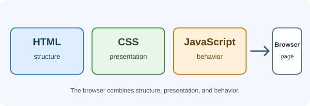

Frontend Development¶
Frontend development is the work of building the parts of an application people see and interact with. It includes the page structure, visual design, interactive behavior, browser performance, accessibility, and communication with backend services.
The browser is the runtime where a web interface is displayed. It downloads HTML, CSS, JavaScript, fonts, and images; interprets them; and gives the user controls such as links, forms, and buttons. A frontend developer works with these browser capabilities directly and through libraries and frameworks.

What this section teaches¶
You will learn how to:
- Structure content with semantic HTML and build accessible forms.
- Style pages with CSS, understand the cascade, and create responsive layouts.
- Write JavaScript that responds to events and communicates with servers.
- Use TypeScript to describe program data and make code easier to change.
- Understand how browsers render pages and use DevTools to investigate them.
- Build reusable interfaces with React and full-stack web applications with Next.js.
How a frontend page comes together¶
- A browser requests a URL and receives a document or application response.
- HTML describes the content and its structure.
- CSS determines how that content is laid out and presented.
- JavaScript handles interactions and can request additional data.
- The browser renders the result and exposes it to visual, keyboard, and assistive-technology users.
React and Next.js do not replace these foundations. They provide higher-level ways to organize user interfaces, manage rendering, and connect an application to data and routes.
Learning path¶
Follow the expandable subject groups in the navigation. A useful order is:
- HTML, to describe meaningful content.
- CSS, to control presentation and responsive layout.
- JavaScript, to add behavior.
- Browser Internals, to understand rendering and investigate pages with DevTools.
- TypeScript, to make larger JavaScript codebases easier to reason about.
- React, to compose interfaces from components.
- Next.js, to build React applications with routing and server features.
You can open any subject from its dropdown when you need a focused reference. Every lesson includes practical examples, important terminology, common misconceptions, revision questions, and official learning resources.
The expanded curriculum includes HTML forms and accessible content; CSS layout, responsive design, positioning, and visual states; JavaScript collections, objects, browser APIs, and asynchronous scheduling; TypeScript configuration, advanced types, and React integration; browser rendering, DevTools, origins, and CORS; React rendering, shared state, refs, and testing; and Next.js routing, server/client boundaries, data, actions, security, and deployment. Some concepts have original diagrams to show how the pieces interact.
A first practical exercise¶
Create a small page with a heading, a paragraph, and a button. Use HTML for the content, CSS for spacing and color, and JavaScript to change the message when the button is clicked. Then open the browser's Console and Network panels to inspect the page and its loaded resources.
Before moving on¶
- Which parts of a page are described by HTML, CSS, and JavaScript?
- What does the browser do with those files?
- Why should a developer learn browser fundamentals before relying on a framework?